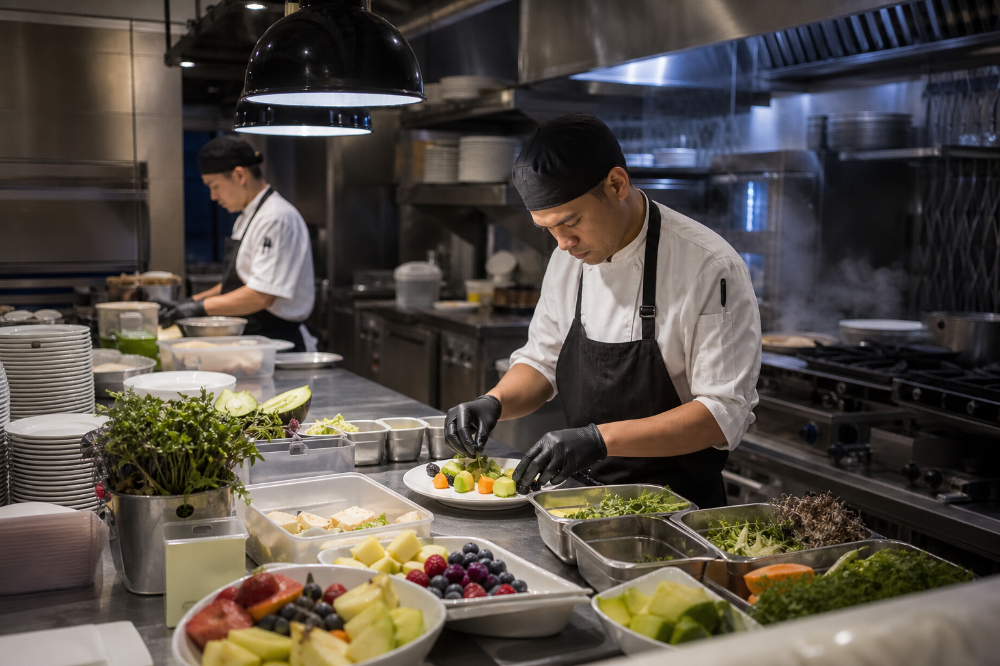
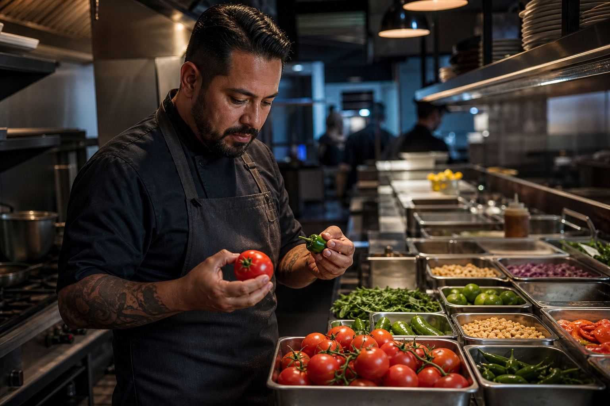
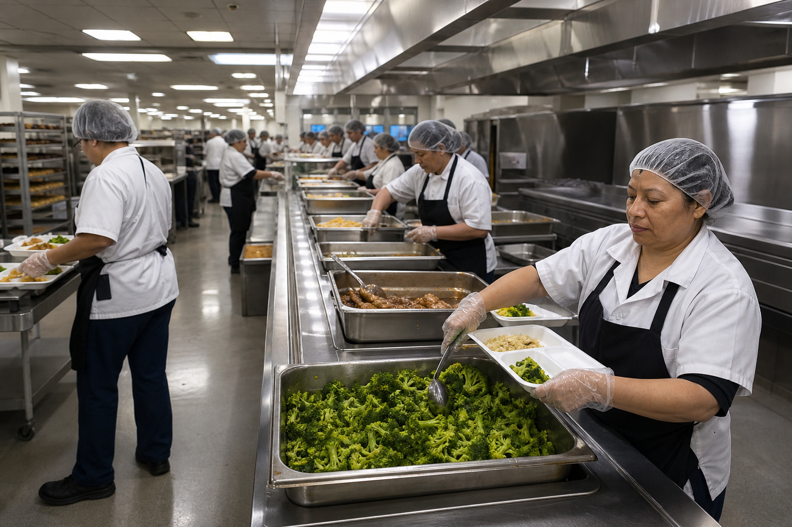
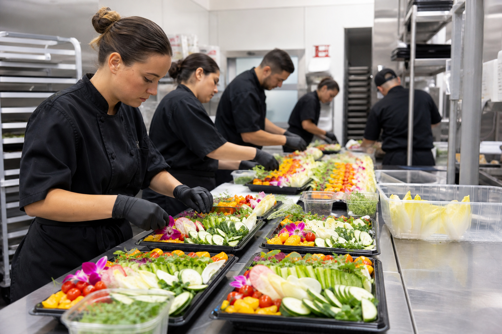

Un solo pedido
Fruta, verdura, hierbas, chiles, frijol, especias, semillas, huevo y jugos. Una factura. Un asesor.

Pides hasta las diez. Tu pedido entra en la primera ruta del día siguiente.
Fruta, verdura, hierbas, chiles, frijol, especias, semillas, huevo y jugos. Una factura. Un asesor.
Corte a las 22:00 para la primera ruta del día siguiente. Corte a las 11:00 para la segunda del mismo día.
Cámara fría, área de selección y andén de carga. Temperatura controlada desde que la caja entra hasta que sube al camión.

Doscientos treinta y ocho productos en diez familias. Fruta, verdura, hierbas y chiles, y también frijol, especias, semillas, huevo y jugos.
Ver el catálogo completoCuatro tipos de cocina. El mismo pedido, con el ritmo de cada operación.

Desayuno, banquete y room service en la misma entrega.

El mismo producto en cada servicio, todos los días.

Volumen constante y documentación en regla.

Picos de demanda con aviso corto.
Este negocio se mide en algo muy concreto: cada pedido entregado.

Nos surtimos donde llega el producto cada madrugada y lo guardamos en bodega propia: cámara fría, área de selección y andén de carga. Temperatura controlada desde que la caja entra hasta que sube al camión, y horario propio, marcado por las dos rutas del día.

Este bloque se publica cuando las cuentas autoricen nombre o logotipo. Mientras tanto queda previsto, sin relleno.